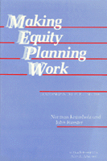

Lessons from an experiment in equity planning
Lessons from an experiment in equity planning


 Lessons from an experiment in equity planning
Lessons from an experiment in equity planning

|  |
Making Equity Planning WorkLeadership in the Public SectorNorman Krumholz and John Forester, foreword by Alan A. Altshulerpaper EAN: 978-0-87722-701-4 (ISBN: 0-87722-701-2) |
Paul Davidoff book of the year award from the Association of Collegiate Schools of Planning, 1990
"No planner, I predict, will be able to consider his education complete during the next decade or so who has not grappled vicariously with the dilemmas Krumholz faced."
—Alan A. Altshuler, from the Foreword
From 1969 to 1979, Cleveland’s city planning staff under Norman Krumholz’s leadership conducted a unique experiment in equity oriented planning. Fighting to defend the public welfare while also assisting the city’s poorest citizens, these planners combined professional competence and political judgment to bring pressing urban issues to the public’s attention. Although frequently embroiled in controversy while serving three different mayors, the Cleveland planners not only survived, but accomplished impressive equity objectives. In this book, Norman Krumholz and John Forester provide the first detailed personal account of a sustained and effective equity-planning practice that influenced urban policy.
Krumholz describes the pragmatic equity-planning agenda that his staff pursued during the mayoral administrations of Carl B. Stokes, Ralph J. Perk, and Dennis J. Kucinich. He presents case studies illuminated with rich personal experience, of the Euclid Beach development, the Clark Freeway, and the tax-delinquency and land-banking project that resulted in a change in the State of Ohio’s property law, among others. In the second part of the book, John Forester explores the implications of this experience and the lessons that can be drawn for planning, public management, and administrative practice more generally.
"Fascinating, illuminating war stories from the nation's most creative and progressive (ex)municipal planning director, capped by an intelligent and useful set of 'lessons.'"
—Chester W. Hartman, Fellow, Institute for Policy Studies, and Chair, Planner Network
"In this extraordinary book, Norman Krumholz and John Forester team up to enlighten those seeking a progressive approach to planning on how to interpret the Clevland experience. Krumholz provides an analytic chronicle of his role as Cleveland's planning director under three mayors and of his efforts to plan on behalf of the city's impoversithed majority. Forester examines the Cleveland story from the perspective of a planning theorist whose focus is how planning can serve people with relatively little political influence. Together the authors identify the opportunities that exist within the urban governmental structure. They conclude that planning and politics are not antithical and that an astute political strategy depends on sound professionalism. This well-written book is required reading for both students and practitioners of planning."
—Susan S. Fainstein, Rutgers University
"Norman Krumholz's story is one of the high points in the history of city planning and urban affairs in this country, and John Forester is one of its foremost interpreters of this history."
—Pierre Clavel, Cornell University
"Over and over again this book reveals the extraordinary levels of commitment, creativity, and effort that were needed and expended to divert the market-driven urban development process, however slightly, from its normal course—the reinforcement and reproduction of the status quo."
—APA Journal
Foreword – Alan A. Altshuler
Preface
Part I: Experience
1. Planning in Cleveland
2. Inheriting a Staff and Building a New One
3. Writing the Policy Planning Report
4. Euclid Beach
5. Regional Issues and the Clark Freeway
6. Low-and Moderate-Income Housing
7. Tax Delinquency and Land Banking
8. Regional Transit and a Committed Planning Presence
9. The Downtown People Mover
10. A State Lakefront Park System for Cleveland
11. Helping Cleveland's Neighborhood Organizations
12. Improving Planning, Management, and Administration in Other City Agencies
Part II: Lessons
13. Possibilities
14. To Be Professsionally Effective, Be Politically Articulate
15. Evaluation, Ethics, and Traps
Index
 | Norman Krumholz, Professor of Urban Planning at Cleveland State University, is former Director of the City of Cleveland Planning Commission and former President of the American Planning Association. He is the recipient of the 1990 National Planning Award for Distinguished Leadership by the American Planning Association. |
 | John Forester, Associate Professor of City and Regional Planning at Cornell University, is the editor of four books and the author of Planning in the Face of Power. |
Political Science and Public Policy
Sociology
Conflicts in Urban and Regional Development, edited by John R. Logan and Todd Swanstrom.
Conflicts in Urban and Regional Development, edited by John R. Logan and Todd Swanstrom, includes books on urban policy and issues of city and regional planning, accounts of the political economy of individual cities, and books that compare policies across cities and countries.
© 2015 Temple University. All Rights Reserved. This page: http://www.temple.edu/tempress/titles/694_reg.html.